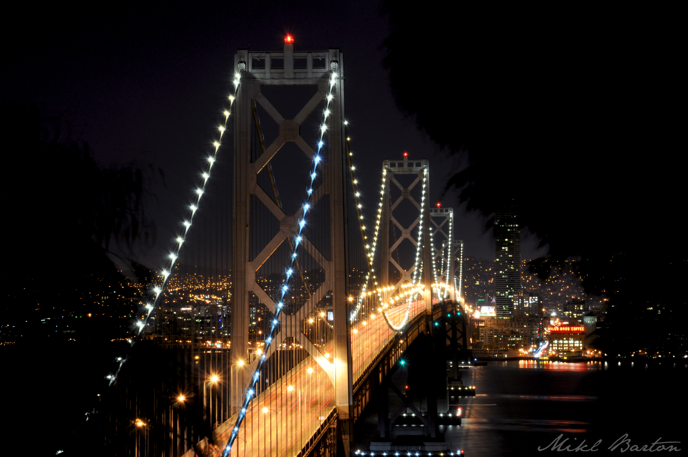
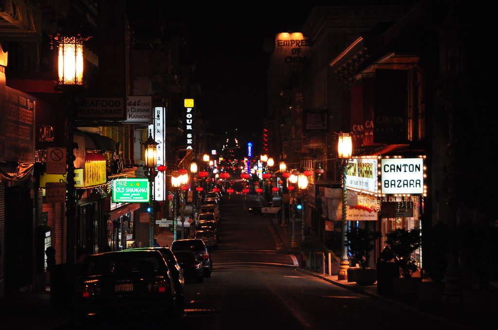
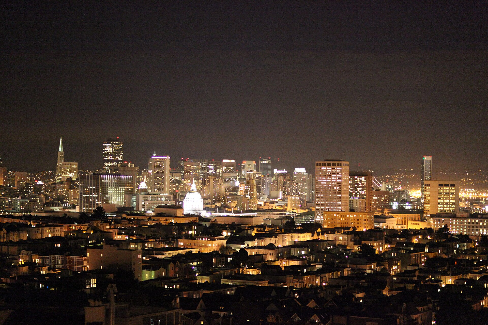
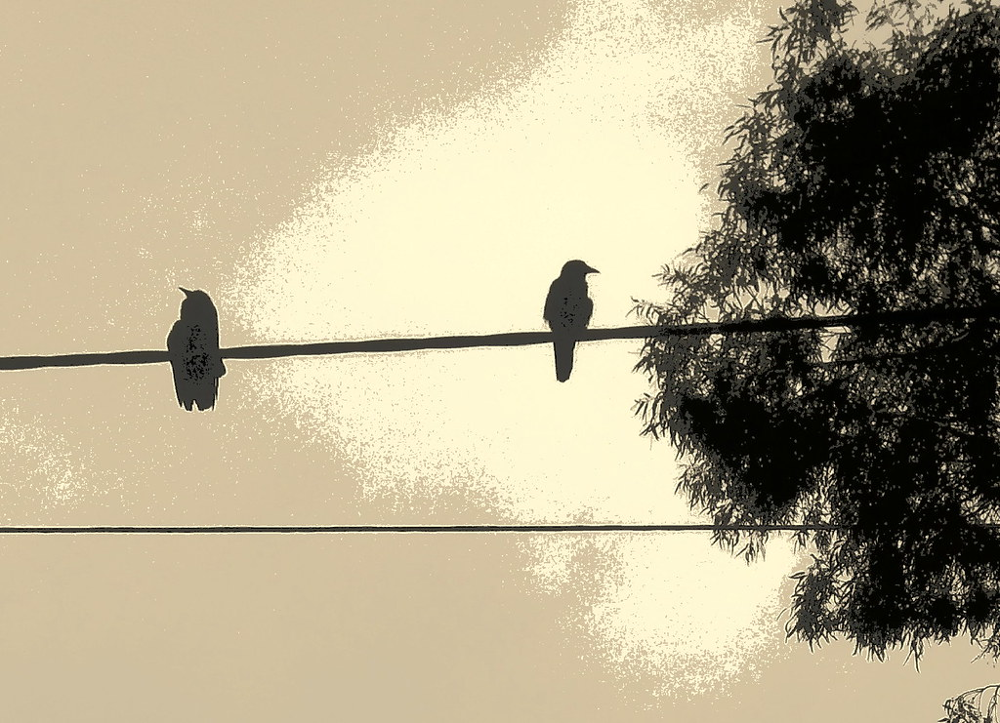
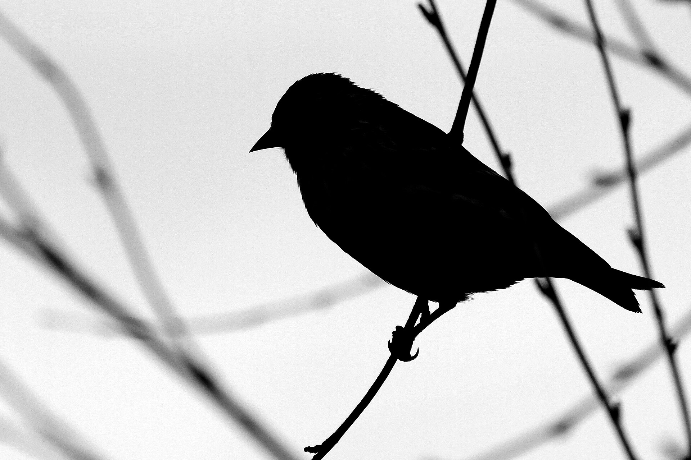
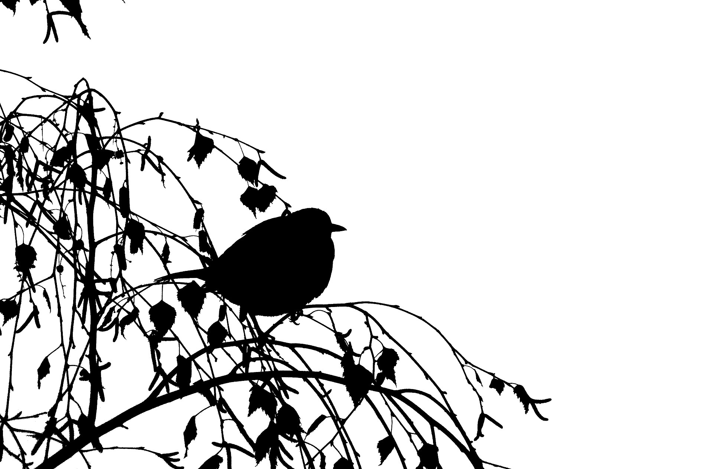
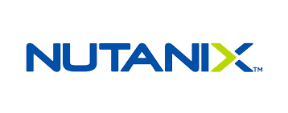

Blackbird’s digital system runs on six tokens. Off-white (#FAFAFA) carries the page. Teal does heavy lifting on accents, fills, and links. Red is the second accent — stronger, more declarative — carrying signal, callouts, headlines, and counterweight moments. Slate anchors structural neutrals and the warm emphasis surface. Black carries display type; dark slate (#1E293B) carries reading text and the cool dark-card. Two layers: raw primitives at the bottom, semantic roles on top. Components only ever reference the semantic layer.
Off-white surface, black content, two brand colors that each carry meaning. Teal is the workhorse: surfaces, fills, links, dividers. Red is a full co-accent — it carries emphasis, headlines, counterweight callouts, key stats, pull quotes, and is a sanctioned text color (red-500 on the off-white surface is ~8.3:1, AA at any size). Reach for it freely where teal would feel too soft; just keep it off long runs of body copy and out of full content backgrounds. Slate is structure, not brand: it anchors neutrals and the warm emphasis surface, and recedes. No pastel cards. No filled containers fighting the content for attention.
The Blackbird mark is a side-profile bird in flat black ink. Three lockups handle every placement: horizontal (default for headers and signatures), circular (badge moments and profile photos), and bird mark (tight contexts and watermarks). On dark surfaces the logo flips to white. Never recolor to teal, red, or anything else.
Reserve a margin around the logo equal to the cap height of the wordmark (x). No text, image, or graphic element enters that space. On photo backgrounds, the dark overlay extends through the clear-space zone.
The mark stays black on light surfaces, white on dark. Never teal, never red, never gradient. Color is reserved for accents, not the brand mark itself.
Scale uniformly. Don’t squish to fit a banner. Don’t rotate the bird upright or sideways. The bird faces upper-right, always.
No drop shadows, glows, outlines, embossing, or gradients. Flat black or flat white, full stop.
If the logo sits on a photo, the photo must carry a dark overlay heavy enough that the logo reads cleanly — check contrast, don’t hit a number. If on a colored surface, only #FAFAFA, #FFFFFF, slate-700/800, or off-black are valid hosts.
Horizontal first. Circular when the space is square or round. Bird mark only when nothing else fits or the audience already knows the brand.
Cover slide carries no logo (the project name does the work). TOC slide carries the horizontal lockup, right-center area, ~2.5" wide. Every other content slide carries just the bird mark in the bottom-right corner. Bird mark = quiet brand presence on the most-used layout. Horizontal lockup = louder brand statement, used sparingly.
Two layers. Primitives are raw values, never referenced by components directly. The semantic layer assigns each role to a primitive. When the brand teal shifts, one line updates and everything follows. But before any of that — six hex values carry the majority of every surface, every accent, every section.
Components reference these tokens, never the primitives directly.
Futura Bold for every headline, label, section number, and stat callout. Avenir for body copy, descriptions, captions, and quote text. Avenir is the brand standard. The live Squarespace site falls through to europa because Avenir isn’t licensed via Adobe Fonts — europa is the closest free substitute. Per-platform fallback chains below. Left-align everything except three contexts: site/landing-page hero blocks (centered headline + tagline over a full-bleed photo), the deck cover slide, and quote interstitial slides.
Futura + Avenir are the brand standard. They render natively on Mac (both ship with macOS). Other platforms each have a constraint: Squarespace can’t license Avenir, Google Slides has neither, Windows ships neither pre-installed. The fallbacks below are the agreed substitutes for each environment.
Save > Embed fonts in file. Adds ~200KB. Recipients on Windows see Futura/Avenir as intended instead of Calibri substitutes.
Both are in the Google Fonts library, both are the closest free matches. Don’t fight Slides — pick the substitutes once and apply consistently.
The teal bar with the red dot is the strongest signature. The bottom accent bar grounds every white content slide. Numbered prefixes carry color meaning. Section headers earn a thin colored underline. Bullet dots replace standard bullets.
Sits directly below the title it punctuates, never above. Also used under quotes and as section-end punctuation. Roughly 1 in 3-4 slides. Never inside containers. Maximum once per slide — the motif is a signature, not a repeating decoration. Two on one slide reads as pattern, not punctuation.
Full-width teal bar runs along the bottom edge of every white-background content slide. The deck's foundation line.
Two-digit number in bold, colored to match the column theme. Teal for inputs/positives, red for outputs/risks. Replaces filled card backgrounds.
Bold uppercase headline, thin matching colored line beneath. Width matches the headline, not the column. Quieter than a tag, louder than nothing.
8px filled circle, brand teal. Replaces standard bullet characters in lists. No nested bullets — if you need hierarchy, restructure.
06
Imagery
This band is Layout G running live: full-bleed nightscape, dark overlay to taste, teal section number, no logo, no bottom bar. Drop one of these into the page every few sections, exactly as a deck would.
Photography lives in two subjects: San Francisco (skyline, urban detail, the bay, shot at dusk or after dark) and bird imagery (blackbirds, ravens, crows, silhouettes against sky). Aesthetic is nightscape — dark, moody, atmospheric. Overlay treatment varies by use; the goal is mood, not a fixed opacity number. Photos appear on the cover, section dividers, and closing slide. Icons are line-stroke black by default, on every content card and list row, never on photo slides.
Section dividers anchor the deck rhythm
Twenty-four cleared images live in assets/photography/: fourteen San Francisco nightscapes and ten corvids. Every file has a row in PHOTOS.md recording photographer, license, and source. If an image is not in the manifest, it does not ship.






Licenses: CC0, Public Domain Mark, or CC BY 2.0 (credit kept in PHOTOS.md). One exception: the Twin Peaks hero predates v3.0 and its license is unverified. Confirm or replace before client-facing use.
Off-black #0D0D0D is the default dark ground. One of these every 3 to 5 slides breaks the white rhythm and resets attention. This band is the rule running live on the page that states it. Red carries the counterweight accent below.
Eighteen system rules, four slide-composition rules, and a pre-ship checklist. Break these and the system drifts.
55-65% of slide and screen area is white. Open and clean, not dark or heavy. Dark surfaces are the exception, used as rhythm breaks every 2-4 slides.
Buttons use var(--color-brand-accent), not #008C95 or var(--teal-500). The semantic layer is the only contract components touch.
If you find yourself typing #008C95 in a component, stop. Either there's already a semantic token for it, or there should be one. Add to the system, then use it.
Teal can fill surfaces, anchor sections, color CTAs, and underline links — not just dot bullets. Target 10-15% of any view. The constraint is meaning, not count: teal carries positive/primary signal. When everything is teal, that signal stops working.
Red is the counterweight to teal — declarative, confident, and brand-anchored. Target 8-10% of any view. Use it for headlines and section eyebrows, secondary CTAs and pill buttons, output/risk/optionality columns, award badges, the bar+dot motif, key stats and pull quotes, hairline accents on dark surfaces, and one-per-deck critical callouts. Pair it intentionally against teal so the meanings stay distinct: teal carries primary/positive, red carries emphasis/counterpoint. Avoid red as a full content background, as body copy, or in long runs of solid fill.
Flat color only. The four-color palette plus the slate scale and dark surfaces is the entire system. No new colors without a new semantic token.
No pastel cards, no warm fills, no rounded boxes with solid backgrounds fighting the text for attention. Containers are outlined with a subtle matching tint (teal-50 or red-50), or they don't exist at all.
Two-digit prefix is teal for inputs, positives, points of difference. Red for outputs, risks, optionality. Slate-500 for neutral context. The number carries the color signal so the title text stays plain.
A hallmark of generic AI-generated slides. Use whitespace. Two exceptions: the teal-bar-red-dot signature (1-in-3 slides), and the section-header underline that matches headline width, not column width.
Off-black (#0D0D0D) is the default for dark emphasis — it's the Core dark-surface anchor and carries the brand directly. Use it every 3-5 slides to break the white rhythm and signal "this matters" — case-study stat strips, key findings, executive callouts, quote interstitials. Slate-500 (#64748B) is the alternative emphasis surface: a medium cool-gray structural surface (the Core slate anchor itself), used when you want the slate structural color to carry a section, warm and structural rather than heavy. Two emphasis surfaces, both anchored. Dark-section grounds are never slate-700/-800 — those are tone derivatives (slate-800 is the cool dark-card, not a ground).
Teal and red are the only brand colors. Slate-500 is structure, not identity: it grounds and divides, then recedes. Use it for tertiary CTAs, icon strokes on light bg, dividers between major sections, captions, and the warm emphasis surface. Its hex is Tailwind's slate-500, a workhorse neutral, so never push it forward to carry brand identity.
Stat cards can carry all three core colors (teal, red, slate) at once, grouped by intent. Teal carries the primary figures, red the headline/signal numbers (the stats that genuinely "wow"), slate-500 the secondary or contextual stats. Band by row or column so the grouping reads as hierarchy. The thing to avoid is random cell-by-cell alternation, not multi-color stat grids themselves. A 2-teal / 2-red / 2-slate grid is on-brand; a teal/red/teal/red checkerboard is not.
Mix fonts (Futura headers, Avenir body), weights (bold key terms inside running prose), color (one teal phrase per paragraph), and bullet styles (teal dot bullets for top-level, no bullets for sub-context). A good content slide has 2-3 different formats running through it. A bad one has eight identical rows.
If everything is a bullet, the structure stops working — the eye reads the dots, not the meaning. Mix bullet lists with prose paragraphs, callout blocks, stat strips, and icon rows. The variety is the structure. Two consecutive bullet lists on one slide is a smell; rewrite one as prose.
Cards stand on their outline, not on a colored bar. The bottom-of-slide accent and the bar+dot signature are the only sanctioned horizontal bars in the system. A teal bar across the top of a card duplicates one of those signatures inside a container — the eye reads the bar, not the card title. White cards get a slate-200 hairline outline. Tinted cards (teal-50, red-50) get a matching tinted border. Nothing on top.
Maximum once per slide. The bar+dot is a signature, not a divider you sprinkle. Two on one slide reads as decorative pattern, not punctuation — and the second one weakens the first. If you need a second separator, use whitespace or the bottom accent bar.
The bar+dot sits directly under the headline it punctuates, never above. Order is title first, mark second, supporting copy third. Above the title it reads as a chip or kicker; below the title it reads as the brand signature finishing the statement.
Teal icons read as accents and category markers. Black icons read as content — like text. Use black when icons line up next to body copy and shouldn't compete with the headline color hierarchy. Pick one color per grid and hold it across every item; mixed-color icons in a single grid look like a mistake, not a choice.
A slide can be a single full-bleed image with no text overlay if the image makes the point. SF skyline at dusk after a section divider doesn’t need a caption. Don’t add text to "balance" the slide — the absence of text is the choice.
"Marginal CPA is 4x higher above $50K spend" not "CPA Analysis." A reader who only scans titles should understand the deck’s argument. Categorical slides (TOC, dividers, roster) can use topic-label titles; everywhere else the title carries the conclusion.
A table is a tool for proof, not a data dump. The key cell gets a teal left-edge accent, a bold weight, or a teal-100 fill — something that says "this is the point." If nothing on the table is highlighted, the audience doesn’t know why the table is there.
Each number on a slide must advance the argument. If a stat is interesting but irrelevant, cut it. Numbers compound — five of them on one slide make four of them noise. Rigor is what we sell; selective is the discipline that proves it.
Final-pass review. Walk every slide top-to-bottom against this list before the deck leaves your hands. Most brand drift is caught here, not in early drafts.
Two CSS variable blocks. Primitives at the bottom, semantic on top. Ship as tokens.css.
/* primitives.css — raw values, never referenced by components */ :root { /* Teal — brand accent, anchored on Blackbird Teal #008C95 */ --teal-50: #ECF7F8; --teal-100: #CFEEF0; --teal-200: #A0DCE0; --teal-300: #6EC6CB; --teal-400: #36AAB1; --teal-500: #008C95; /* BRAND */ --teal-600: #007078; --teal-700: #00565D; --teal-800: #003E43; --teal-900: #00282C; --teal-950: #001316; /* Red — signal, anchored on #862633 */ --red-50: #F8E9EC; --red-500: #862633; /* SIGNAL */ --red-700: #561821; /* ...full 11-step scale */ /* Neutrals — cool slate, harmonizes with brand teal */ --neutral-50: #F8FAFC; --neutral-100: #F1F5F9; --neutral-200: #E2E8F0; --neutral-300: #CBD5E1; --neutral-500: #64748B; --neutral-700: #334155; --neutral-800: #1E293B; --neutral-900: #0F172A; --neutral-950: #000000; /* brand black */ /* Dark surfaces */ --dark-bg: #0D0D0D; --dark-card1: #1C1C1C; --dark-card2: #222222; } /* semantic.css — the active system. Components only use these. */ :root { --color-brand-accent: var(--teal-500); --color-brand-accent-hover: var(--teal-600); --color-brand-accent-active: var(--teal-700); --color-brand-accent-subtle: var(--teal-50); --color-brand-deep: var(--teal-900); --color-signal: var(--red-500); --color-signal-subtle: var(--red-50); --color-brand-slate: var(--neutral-500); /* structural spine (not a brand color), matches site */ --color-brand-slate-deep: var(--neutral-700); --color-text-default: var(--neutral-950); --color-text-body: var(--neutral-800); --color-text-secondary: var(--neutral-700); --color-text-muted: var(--neutral-500); --color-text-inverse: #FFFFFF; --color-surface: #FAFAFA; /* off-white, matches site */ --color-surface-pure: #FFFFFF; /* raised cards, modals */ --color-surface-soft: var(--neutral-50); --color-surface-muted: var(--neutral-100); --color-surface-structural: var(--neutral-200); --color-surface-deep: var(--dark-bg); /* DEFAULT DARK — Core anchor (dark ground) #0D0D0D */ --color-surface-slate-dark: var(--neutral-500); /* slate emphasis surface — slate-500 anchor (Core) */ --color-border: var(--neutral-200); --color-border-strong: var(--neutral-300); /* v3.0 — AA-safe small-text accent. Use for links, eyebrows, section numbers, and any teal text below 18px on light surfaces. */ --color-link: var(--teal-600); --color-link-hover: var(--teal-700); /* Type stacks — Avenir is brand standard. europa is the Squarespace fallback (Avenir not licensed via Adobe Fonts). See section 03 for per-platform map. */ --font-headline: "Futura", "futura-pt", "Jost", "Trebuchet MS", system-ui, sans-serif; --font-body: "Avenir", "europa", "Nunito Sans", "Calibri", system-ui, sans-serif; }
Every element here references semantic tokens. Swap teal-500 to a different hex and watch all of these update at once.
The canonical sequence from the spec: cover, TOC, content, a photo divider per section, a dark break every 3 to 5 slides, closing on off-black. White carries; photo and dark slides are the punctuation.
Each layout in the spec, rendered at slide scale. The chart slide below this gallery is Layout A; Inputs/Outputs, POD/POP, Solid Callout, Roadmap, and the Dark Emphasis Strip are specced as full components further down.
Most-used slide layout, 16:9 PowerPoint widescreen. Chart left, text right, two fonts plus bold weight for emphasis. Title carries the message. Chart uses the canonical series — teal for the top three qualities (the ones the title elevates), slate for the rest. Bird mark only in the corner; the horizontal lockup is reserved for TOC and cover slides. Teal bar grounds the bottom edge.
When a layout calls for cards, this is the spec. Page surface stays #FAFAFA. White cards sit on top in pure white with a thin slate-200 outline and a 10px radius — just enough contrast to lift the card off the page without shadow. The slate-200 outline is specifically for white cards on the off-white surface; tinted cards (teal-50, red-50) use matching tinted borders (teal-200, red-200), and dark cards skip the outline entirely. No top-edge accent bars on cards. Ever.
Pure white background lifts off the off-white page surface. The thin slate outline does the rest of the visual separation work.
10px radius on every corner. No drop shadows, no glows, no inner shadows. Depth comes from the contrast between #FAFAFA and #FFFFFF.
1px outline in slate-200 (#E2E8F0). The lightest visible step in the slate scale — reads as a hairline, not a frame.
Every card in this design system follows this spec — rule cards, motif cards, component examples, token tables. Reuse the pattern instead of inventing a new container.
Benchmark numbers front and centre
94% cost, 4x, 0 JVM lead the hero stat strip. The draft does what EMR does with 4.5x, but louder and earlier.
Migration friction dissolved by a code diff
The one-line before/after swapping the endpoint string is the single most persuasive element on the page.
OSS vs. managed tier clearly separated
A two-card layout distinguishes self-hosted Sail from the managed platform. Engineers see their on-ramp clearly.
Agentic AI retained for VC signalling
The badge keeps "agentic AI" visible to investors without pushing it into the H1, which stays engineer-focused.
Point of Difference
The only LakeSail prop with quantified, buyer-verifiable magnitude. ClickBench-anchored. Survives 12-18 months as the lead.
Point of Parity
Spark Connect protocol. Iceberg and Delta. Drop-in for existing Spark code. Removes the switching objection.
Optionality
Long-game moat, not the 2026 sale. Hedged bet. If the agent thesis lands, the resonating focus shifts here in 3-5 years.
Replaces the typical white-card-with-quote pattern. The block IS the emphasis. Use once per slide, never two solid blocks side by side.
Compile and analyze all stakeholder input from this audit presentation
Set up discovery calls with key customers and internal teams
Refine content and visual design based on consolidated feedback
Develop secondary website pages aligned with new positioning
Numbered circles in horizontal sequence, color-graded from teal (now, first) to red (later, future). 3–5 steps; more than 5 reads as a checklist. Use for next-steps, project phases, sequenced processes. Titles are the verb of the work, not "Next Steps." Card text is centered — the one place we break left-align, mirroring the symmetry of the circle above.
The Core dark-surface anchor (the dark section ground). Use for every dark rhythm break: section divider emphasis, case-study stat strips, key findings, executive callouts, quote interstitials, code blocks, closing slide. Teal accents carry across cleanly; dark surfaces skip the bottom accent bar and carry no card bars.
The slate structural color (#64748B) used as a full surface. Not "dark" — medium cool-gray. Use when you want the section to feel structural and warm rather than heavy: capability dividers, slate-themed quote interstitials, the secondary kind of emphasis. Two emphasis surfaces in the system, both anchored: off-black for heavy, slate-500 for warm. No interpolated slate-700/-800 surfaces.
Four enterprise programs. Every number sourced from internal QBR decks and weekly performance reviews.
6X ad spend
40+ countries
Pipeline outpaced spend
Up from 20%
Historical highest net profit

MQL volume up on lower budgets
Every theater, every quarter, on plan
+34% conversions
−27% spend
Beat the auction
Dark emphasis section. Off-black background (#0D0D0D), four cool dark-cards on dark slate (#1E293B), white logo frames, big teal stats, white labels, teal italic outcomes. No bars on the cards — the stat number carries the brand. Slate-500 (#64748B) is the alternative emphasis surface for warm/structural emphasis — both are Core anchors. Use one of these every 3-5 slides to break the white rhythm.